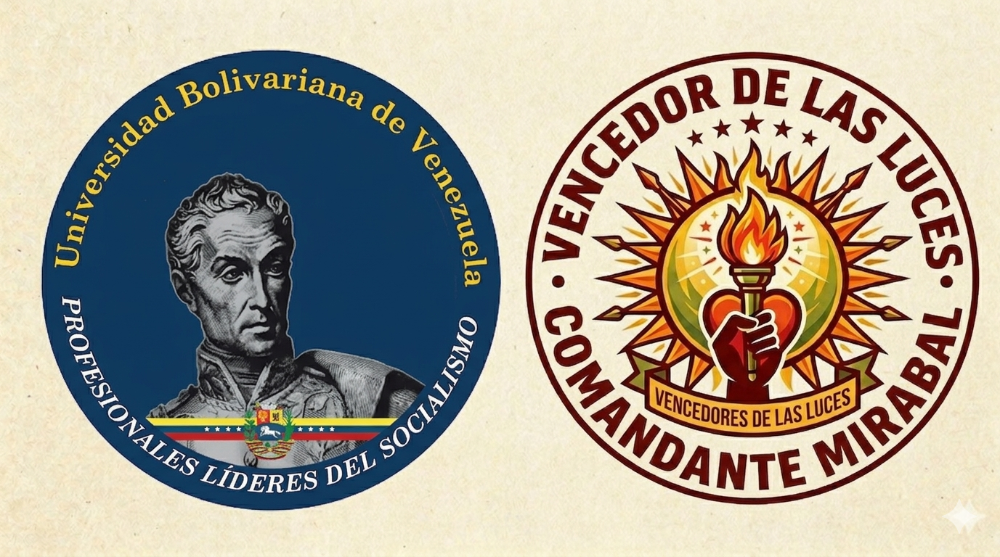

La Universidad Bolivariana de Venezuela, con orgullo y gratitud, dedica este espacio digital a la comunidad que abrió sus puertas y corazones. Un legado para las generaciones que vienen.

Esta plataforma fue diseñada pensando en ustedes. Aquí encontrarán todo lo que necesitan en un solo lugar, de forma sencilla y accesible.
Aquí encontrarás el mensaje de bienvenida, el propósito de esta web y la guía de navegación. Es el punto de partida para conocer todo lo que ofrecemos.
Estás aquíUn espacio exclusivo para los vecinos. Podrás dejar tu voz, solicitar atención con líderes comunitarios, jueces de paz, jefes de calle, y plantear tus inquietudes.
Conoce el paso a paso de cómo se construyó este proyecto. El esfuerzo, la dedicación y el trabajo constante al servicio de la comunidad y la sociedad.
Un reconocimiento especial a la Universidad Bolivariana de Venezuela, a sus docentes y estudiantes que hicieron posible este proyecto comunitario.
Esta página no es solo un proyecto académico. Es una herramienta viva que quedará en manos de la comunidad y servirá de guía para los futuros estudiantes de la UBV que continúen este camino.
"La educación es el arma más poderosa que puedes usar para cambiar el mundo."— Nelson Mandela
Imágenes que capturan el trabajo, la dedicación y el encuentro entre la UBV y la comunidad.
Este es tu espacio. Aquí puedes comunicarte, solicitar atención y hacer escuchar tu voz a los líderes de tu comunidad.
Deja tu mensaje, inquietud o propuesta. Será recibido por los representantes de la comunidad.
Agenda una reunión con los líderes comunitarios: jefes de calle, jueces de paz u otras autoridades.
Un recorrido por cada etapa, cada esfuerzo y cada momento que hizo posible este trabajo al servicio de la comunidad Las Luces del Cementerio.
Desde la concepción de la idea hasta la entrega final, cada fase fue ejecutada con dedicación y compromiso social.
Enero - Febrero 2026
Identificación de las necesidades comunitarias, análisis del marco legal y diseño de la propuesta inicial. Reuniones con líderes comunitarios para entender las problemáticas locales.
Marzo 2026
Primeras visitas a la comunidad, presentación del equipo UBV, establecimiento de vínculos de confianza y validación de la propuesta con los vecinos y líderes locales.
Abril 2026
Implementación de las actividades planificadas, talleres jurídicos, asesorías individuales, y trabajo directo con la comunidad. Documentación exhaustiva del proceso.
Abril 2026
Creación de esta plataforma web, compilación de materiales, sistematización de la experiencia y preparación del legado para futuras cortes de estudiantes.
Fotografías, videos, documentos legales y publicaciones que testimonian cada momento de este proyecto.
Arrastra aquí tus imágenes del proyecto o haz clic para seleccionar
Sube videos del proceso, entrevistas o actividades realizadas
Constitución Nacional, leyes orgánicas y normativas aplicables
Documento base con objetivos, metodología y cronograma
Resultados parciales y evaluación del impacto comunitario
Leyes, reglamentos, informes o cualquier documento relevante
Análisis del impacto social y jurídico del trabajo realizado por estudiantes de la Universidad Bolivariana.
Documento que recoge aprendizajes, metodologías y recomendaciones para futuros proyectos similares.
Artículos, ensayos o reflexiones sobre el proyecto
Resultados tangibles del trabajo realizado en beneficio de la comunidad.
Asesorías jurídicas directas a vecinos de la comunidad
Capacitaciones en derechos, deberes y procedimientos legales
Situaciones comunitarias gestionadas exitosamente
Evaluación positiva por parte de la comunidad
"Los estudiantes de la UBV llegaron con mucho respeto y conocimiento. Nos ayudaron a entender nuestros derechos y cómo ejercerlos."
"Este proyecto cambió la forma en que vemos la universidad. Ahora sabemos que están aquí para apoyarnos de verdad."
"Este proyecto nos enseñó que el verdadero derecho se construye en las calles, con la gente, escuchando sus necesidades y trabajando juntos por soluciones reales. La academia cobra sentido cuando se pone al servicio de la comunidad."— Equipo UBV Sección 2301-N
Un reconocimiento sincero a la Universidad Bolivariana de Venezuela por su invaluable aporte a esta comunidad.
De la Comunidad Las Luces del Cementerio a la UBV
Estimada Universidad Bolivariana de Venezuela,
Con profundo respeto y gratitud, la comunidad Las Luces del Cementerio desea expresar su más sincero agradecimiento por la presencia, el compromiso y la dedicación demostrada a través de este proyecto comunitario.
Sus estudiantes llegaron a nuestras calles no solo con conocimientos jurídicos, sino con humanidad, escucha activa y voluntad de servicio. Cada visita, cada conversación y cada acción realizada dejó una huella positiva en nuestra comunidad.
Esta página web es el testimonio vivo de ese trabajo conjunto. La dejamos como legado para que futuras generaciones de estudiantes y vecinos puedan continuar construyendo juntos un mejor mañana.
Gracias por creer en nosotros. Gracias por estar aquí.
Su dedicación, paciencia y sabiduría fueron el faro que guió a cada estudiante durante este proceso. Un ejemplo de vocación y compromiso.
Líder del equipo, impulsor de esta iniciativa digital y puente entre la universidad y la comunidad. Su visión hizo posible este legado.
Compañeros incansables que trabajaron con entrega y compromiso. Su esfuerzo es parte fundamental de este proyecto.
Por brindar educación gratuita, de calidad y con conciencia social. Por formar no solo abogados, sino ciudadanos comprometidos.